RGB Spotlight
How one lamp goes together: two boards, three short leads, a sheet-metal housing with a heat stack inside, three lenses and four barn doors. Fourteen steps, each with a picture drawn from the design files.
How to read this guide
- from the design
- The order and the fit come from the design files: the housing's model and its README, DESIGN.md and PRODUCTION.md. Not tried on hardware.
- open
- The records leave something in the step undecided. The guide proposes a way and marks it as a proposal.
- built
- Done on a real lamp, with the date and what was learned. No step has this yet.
Directions. The front is where the light comes out. Top is the side of the driver's two cable connectors and the cap's cut-outs; the lone tie rod is at the bottom. Left and right are as seen from the front.
Pictures. The step pictures are drawn from the housing's model and the boards' KiCad files. Parts fitted in an earlier step are pale grey. The parts the step adds are in colour, pulled out along the thin line they go on by. A number in a circle, such as 7, is a part number from the parts table.
The colours are a key, not the parts' finish. The LED leads and their plugs are not in the model: the pictures draw them in, and where their slack lies is a guess.
The lamp, front, back and inside


Parts
26 kinds of part, 78 pieces. Each sheet is drawn at one scale, the fasteners about twice as large as the housing parts. The count after × is per lamp.
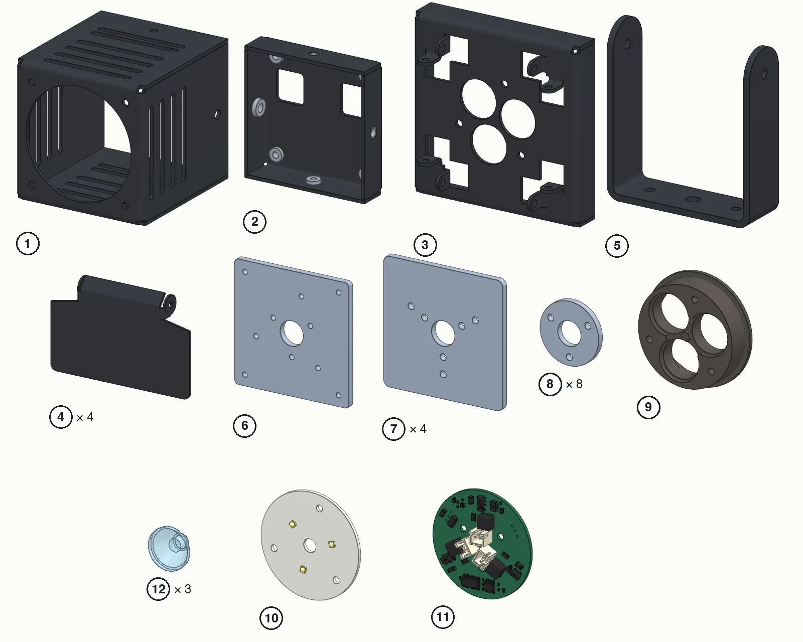
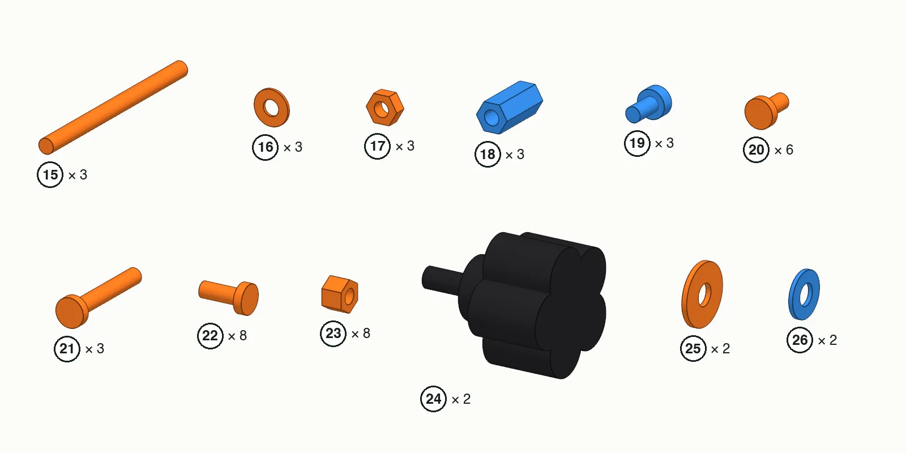
| No. | Part | Per lamp | For 5 | What it is, where it comes from |
|---|---|---|---|---|
| Housing: sheet metal from JLCCNC (Al 5052) and one print | ||||
| 1 | Shell | 1 | 5 | 1.5 mm, black powder coat. Front face with the 54 mm window, four walls with vent slots. |
| 2 | Cap | 1 | 5 | 1.5 mm, black. Comes with 8 press nuts fitted: M3 top and bottom, M4 in each side rim, 4 × M3 in the back. |
| 3 | Hood | 1 | 5 | 1.5 mm, black, 84 mm square (round 8, D36). Three lens windows, eight lugs for the door pins. |
| 4 | Door | 4 | 20 | 1.0 mm, black. One part four times: 40 mm from hinge to tip, 71 mm wide. |
| 5 | Yoke | 1 | 5 | 3 mm, black. |
| 6 | Plate | 1 | 5 | 3 mm, bare, 58.5 mm square, 10 × M3 threads and the 12 mm bore. It has a front and a back: see step 5. |
| 7 | Fin | 4 | 20 | 3 mm, bare, 61 mm square. |
| 8 | Spacer | 8 | 40 | 3 mm, bare, 30 mm round. |
| 9 | Carrier | 1 | 5 | JLC3DP, MJF PA12, dyed black. Holds the three lenses by their flanges. The order has two more, 0.5 and 1.0 mm taller (appendix B). |
| Boards and optics | ||||
| 10 | LED board v2.0 | 1 | 5 | Aluminium, white mask, the three LEDs fitted by JLC. Arrives with JLC's edge rails on. |
| 11 | Driver board v2.4 | 1 | 5 | Assembled by JLC except J1 and J2. |
| 12 | Lens | 3 | 15 | Generic 20 mm PMMA TIR lens without holder, 30°, smooth face (AliExpress item 1005002662759375). 20 ordered on 2026-11-19: 15 and 5 spare. The listing has no drawing, so the fit is not known: step 9. |
| 13 | LED lead | 3 | 15 | JST XHP-2 plug (C144401), two SXH-001T-P0.6 contacts (C140573), two wires of about 8 cm; or a ready-made XH 2-pin lead. From own stock. |
| 14 | XH 3-pin header | 2 | 10 | JST B3B-XH-A (C144394), for J1 and J2. In LCSC order WM2611190181. |
| Fasteners, to buy (PRODUCTION.md, Parts for the open orders) | ||||
| 15 | Tie stud | 3 | 15 | M3 threaded rod (DIN 976-1), cut to 45 mm. One metre gives 20. |
| 16 | Washer M3, steel | 3 | 15 | DIN 125-A 3.2, 7 × 0.5 mm. |
| 17 | Nut M3, steel | 3 | 15 | ISO 4032. Clamps the stack. |
| 18 | Standoff, polyamide | 3 | 15 | Hex, M3 female-female × 12 mm. |
| 19 | Driver screw, polyamide | 3 | 15 | Pan head M3 × 6. |
| 20 | Screw M3 × 6 | 6 | 30 | ISO 7380 button head. Four for the shell, two for the cap. |
| 21 | LED screw M3 × 20 | 3 | 15 | ISO 7380 button head, black. |
| 22 | Door pin M3 × 8 | 8 | 40 | ISO 7380 button head. |
| 23 | Nylock nut M3 | 8 | 40 | DIN 985. One on each door pin. |
| 24 | Knob | 2 | 10 | Elesa VC.692/25 p-M4x10 (code 166132): five lobes, 25 mm, M4 × 10 stud. A printed one is an option (mech/housing/README.md). |
| 25 | Washer M4, steel | 2 | 10 | DIN 9021, 4.3 × 12 × 1.0 mm. Under the knob. |
| 26 | Washer M4, polyamide | 2 | 10 | DIN 125-A, 4.3 × 9 × 0.8 mm. Between yoke and shell: the pivot's friction face. |
Tools and supplies
Hand tools
- 2 mm hex key: every ISO 7380 M3 screw (20 21 22).
- 5.5 mm spanner or nut driver: M3 nuts, nylocks and standoffs (17 23 18). A torque driver for 0.5 N·m if there is one.
- Screwdriver to suit the polyamide screws 19: their drive is not specified.
- Hacksaw and a fine file, for the M3 rod.
- Two spare M3 nuts, locked together to turn a stud.
- A flat surface (glass, a surface plate) and a straight edge.
- Side cutters, tweezers.
Soldering and measuring
- Soldering iron with a broad tip. A hot plate or preheater helps on the aluminium board.
- XH crimp tool and wire strippers, only if the leads are made here.
- Multimeter.
- Bench supply, 12 V, with a current limit that goes down to 0.15 A.
- A WS2811 data source at 800 kHz, for example an ESP32 with FastLED's
WS2811(the review's firmware notes). - Thermocouple or IR thermometer, for step 14.
Supplies
- Thermal paste: under the LED board, on the plate's front rim, and in every joint of the stack.
- Thread-lock, medium strength: the studs in the plate.
- Solder.
- Wire for the leads: 24 AWG with thin high-temperature insulation, at most 1.5 mm across. Not silicone (D24).
- Sleeve for the six wires in the LED board's hole (D20): silicone-coated fibreglass, black, 200 °C, in 4 mm and 5 mm inner diameter. Ordered at AliExpress on 2026-11-19. open Which size fits: step 3.
- Black silicone, a dab for the wire hole (D27): Kafuter K-704B, RTV. Ordered at AliExpress on 2026-11-19. open When it goes on: step 8.
Boards, on the bench
Finish and test the electronics before any of it goes into the housing. Start with one board of each (the order's note).
J1 and J2 onto the driver
from the design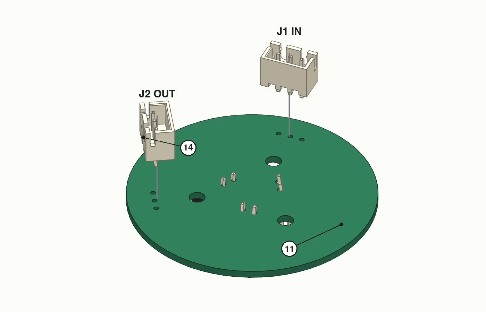
- Lay the driver back up: the side with no parts, printed "J1 IN / J2 OUT: 1=12V 2=DATA 3=GND".
- Push a header into each row of three holes, inside its printed outline. The header's body sits off-centre on its pins, so it fills the outline only one way round.
- Hold each header flat against the board and solder its three pins on the parts side.
Check
- Each header fills its outline. A header turned half a turn swaps 12 V and GND on that connector.
- With a meter: J1 pin 1 to J2 pin 1 and J1 pin 3 to J2 pin 3 both conduct. 12 V and GND pass straight through; data does not.
Three LED leads
from the design- Cut two wires of about 8 cm for each lead: 24 AWG with thin high-temperature insulation, at most 1.5 mm across. Six silicone wires would not leave room for the sleeve in the LED board's hole (D24). A ready-made XH 2-pin lead in 26 AWG is enough at 0.45 A per LED.
- Crimp a contact onto one end of each wire.
- Find the plug's + cavity before pushing the wires in: hold the plug over a socket on the driver. It goes on one way only, and the print beside each socket (R+, G+, B+) marks the + pin, pin 1.
- Push the + wire into that cavity and the other wire beside it. Use the same colour for + on all three leads.
- Twist each pair. Strip 2 mm off the loose ends and tin them.
Check
- Each contact has clicked in and does not pull out.
- With a meter: each wire conducts end to end, and the two wires of a lead are not joined.
Rails off, six wires onto the LED board
open- Snap JLC's edge rails off the board and file the break points flush with the round edge. The carrier's skirt clears the edge by 0.3 mm in the model.
- Gather the six loose ends, slide the sleeve over them, and pass them through the centre hole from the back, the bare aluminium side, to the front. The sleeve ends up in the hole: its wall is bare aluminium (D20, review R9).
- Solder each wire to its pad: R+ R−, G+ G−, B+ B−. The + wire is the one in its plug's pin 1. Aluminium takes the heat away fast, so use a hot iron or preheat the board.
- Keep the joints low and the wires flat on the board: the carrier leaves 2.5 mm above the pads, out to 21 mm from the centre.
- Mark the three plugs R, G and B.
Check
- With a meter: from each of the six wires to the board's bare aluminium back, no connection (bench list, step 2).
Open
- The rails. How JLC joins them to a round aluminium board is not known until the boards arrive.
- The sleeve's size. Two are ordered, 4 mm and 5 mm inside, and the listing gives no wall thickness: use whichever passes the 6.4 mm hole with the six wires in it. Six 1.5 mm wires bundle to about 4.5 mm, so the 5 mm one is the likelier, if its wall is 0.7 mm or less. Worked out here, not tried.
- No grommet. Its flange on the board's front, with a wire over it, would stand higher than the 2.5 mm the carrier leaves.
- Soldering to aluminium has not been tried on this board.
Checks before the housing
from the design- Look. LED polarity against the "+" marks on the LED board; the pin-1 dots of U1 to U7; the bands of D1 to D4.
- Measure, unpowered. From 12 V to GND (J1 pin 1 to pin 3) and from +5 V (U1 pin 8) to GND.
- Plug in the LEDs: red into J3, green into J4, blue into J5. Lay the LED board on a piece of metal, the heat plate will do, with the LEDs facing away from you. They have no heatsink yet and no lenses.
- First power. 12 V on J1 pin 1, GND on pin 3, the supply limited to 0.15 A, no data.
- One colour at a time. Raise the limit to 0.6 A. Send one colour at 255, at 800 kHz with a gap of at least 500 µs between frames. Keep each colour short.
| 12 V to GND, unpowered, once the capacitors have charged from the meter | ≫ 1 kΩ |
| +5 V to GND, unpowered | about 470 Ω |
| First power: +5 V at U1 pin 8 | 4.8–5.2 V |
| First power: the light, and the supply's current | dark, < 30 mA |
| One colour at 255: supply current | about 0.15 A |
| One colour at 255: across that colour's Rs | about 100 mV |
Check
- Each colour lights the LED of that colour. That proves the lead's socket and its polarity.
- If all three light at full with no data, check +5 V (review R12).
The rest of the bench list follows in step 14: full white in the closed lamp, a chain, and brightness against level. Its last check, the data-pin fault, probes the driver's front, so it needs the driver out of the housing again.
Heat stack
Three tie rods hold the plate, eight spacers and four fins together and later carry the driver (D32). The stack is built on the bench with the plate's front face down, then goes into the shell.
Studs into the plate
open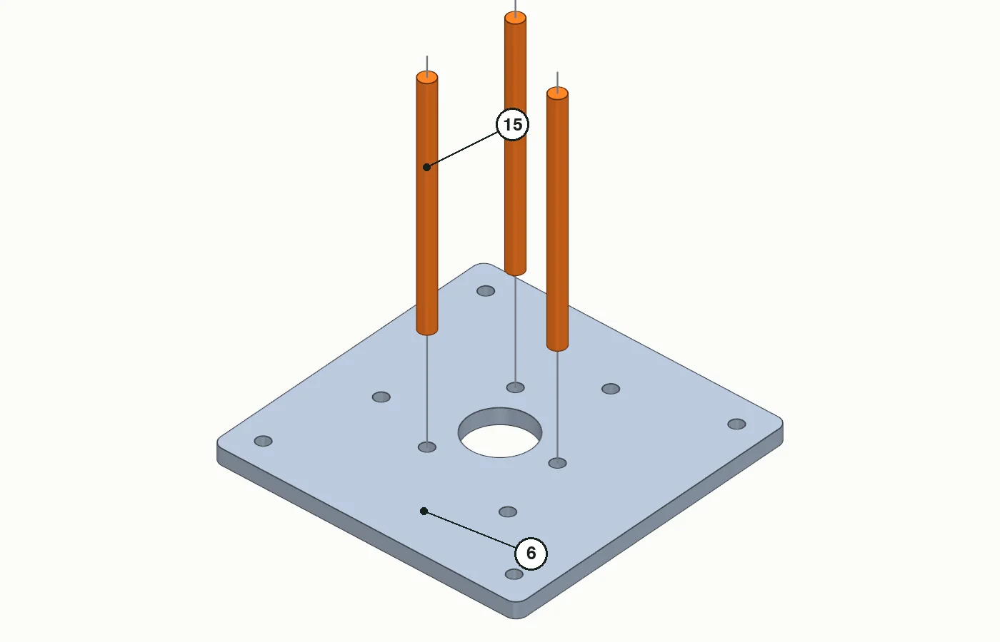
- Cut three 45 mm lengths of M3 rod (up to 47 mm fits). File the ends until a nut runs on.
- Find the plate's front. Turn it until one of the three inner holes is straight below the bore. On the front face, the outer hole near the top is then right of the centre line. On the back it is left of it.
- Lay the plate front face down on the flat surface.
- Put thread-lock on the first 3 mm of a stud. With two nuts locked together on it, screw it into an inner thread from the back until its end touches the surface underneath. Then turn it back 0.4 of a turn: that is 0.2 mm on an M3 thread.
- Do the other two. Wipe any thread-lock off the front face, and let it cure as its data sheet says before step 6.
Check
- A straight edge across the front face touches no stud. The ends must be 0.2 mm below the face and never above it: the LED board lies there.
- Each stud stands about 42 mm out of the back.
Open
- Setting the 0.2 mm. The records give the depth and no method. Backing off from a flat surface is this guide's proposal, not tried.
- Cure time. No thread-lock is chosen, so the wait before the nuts are tightened is not recorded.
Spacers, fins, nuts and standoffs
from the design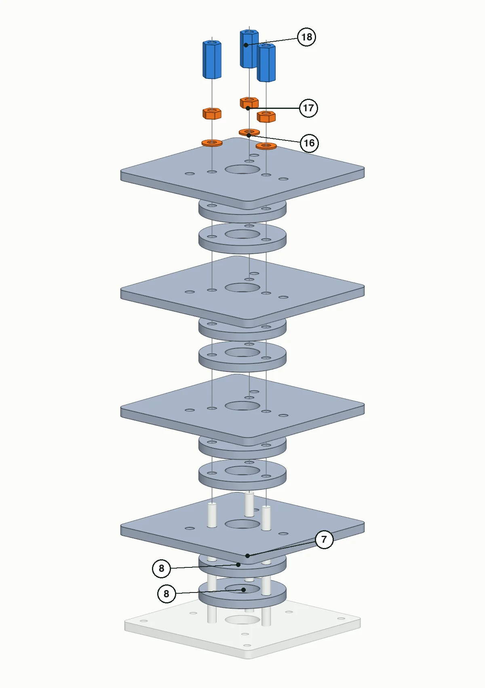
- Spread a thin film of thermal paste on every face that meets another: plate to spacer, spacer to spacer, spacer to fin. The heat budget counts on greased joints (
thermal_sheet.py). - Onto the studs: spacer, spacer, fin. Four times. A fin fits either way up; turn it so its edges run along the plate's.
- A washer and a nut on each stud, finger tight.
- Stand the stack on one edge on the flat surface so the four fins line up. Tighten the three nuts evenly, a little at a time in turn, to about 0.5 N·m.
- Screw a standoff onto each stud's end, against the nut, by hand. It takes 3.3 mm of stud.
- Wipe off the paste that has squeezed out, most of all inside the bore.
Check
- The stack is 39 mm from the plate's front to the last fin's back, and the standoffs end 14.9 mm behind that.
- The 12 mm bore is clear from end to end.
- The fins' edges line up: in the shell they have 0.5 mm a side.
The stack into the shell
from the design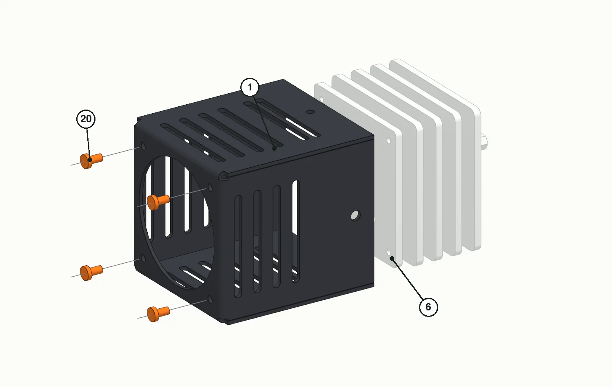
- Spread a thin film of paste on the plate's front face near its four corners, where it meets the inside of the shell's face. Keep the corner threads clean.
- Turn the stack the right way. Its lone stud, the one straight below the bore, points at a wall with six slots. The walls with four slots and the larger hole are the sides, where the knobs go.
- Slide the stack in from the back until the plate meets the shell's face.
- From the front, four M3 × 6 through the face into the plate's corners. Tighten them evenly.
Check
- Through the window: three stud ends just below the plate's face, one at the bottom and two higher up, left and right.
- The vent slots lie over the gaps between the fins.
The plate is square, so it also goes in a quarter turn out. Then the driver's connectors would not meet the cap's cut-outs in step 12.
Optics and driver
Steps 8 and 9 are done with the lamp standing on the shell's back edge, front up. For step 10 it is turned over onto the hood.
LED board onto the plate, plugs through the bore
open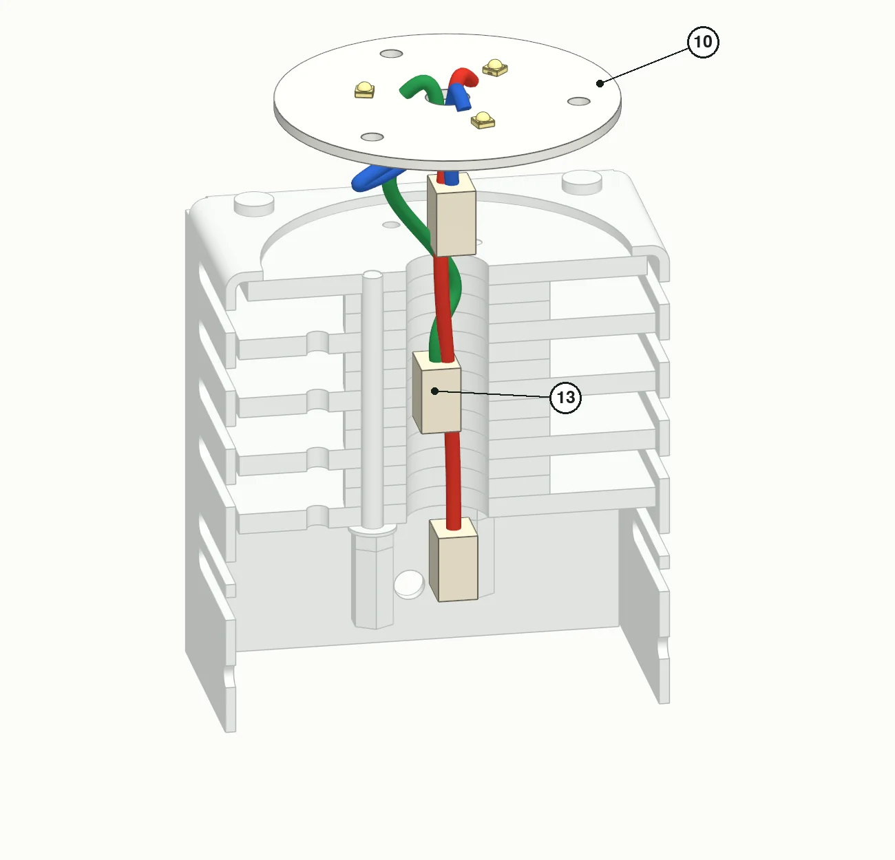
- Stand the lamp on the shell's back edge, front up.
- Spread a thin film of paste on the LED board's back. Keep it away from the centre hole and the three screw holes.
- Feed the plugs down the 12 mm bore one at a time, each beside the wires already through. A plug is 7.4 × 5.75 mm and has 1.3 mm to spare at its corners.
- Lower the board onto the plate with the red LED at the upper left and its three holes over the plate's outer threads. The board also fits a third of a turn either way, which swaps the colours' places: build every lamp the same.
- Draw the leads' slack to the back until the wires lie flat over the board's centre.
- Seal the wire hole against light with a dab of black silicone (D27).
Check
- All three plugs hang out of the stack's back, and the board lies flat. It stays loose until step 9 clamps it.
Open
- The silicone. D27 names it and no point in the order. Proposal: here, since step 4 has already proven the wiring. Leave it out on the first lamp if the board may have to come off again. The product is Kafuter K-704B; its listing doesn't state the cure type.
- The fit in the bore with two pairs already through has not been tried.
Carrier, lenses and hood
open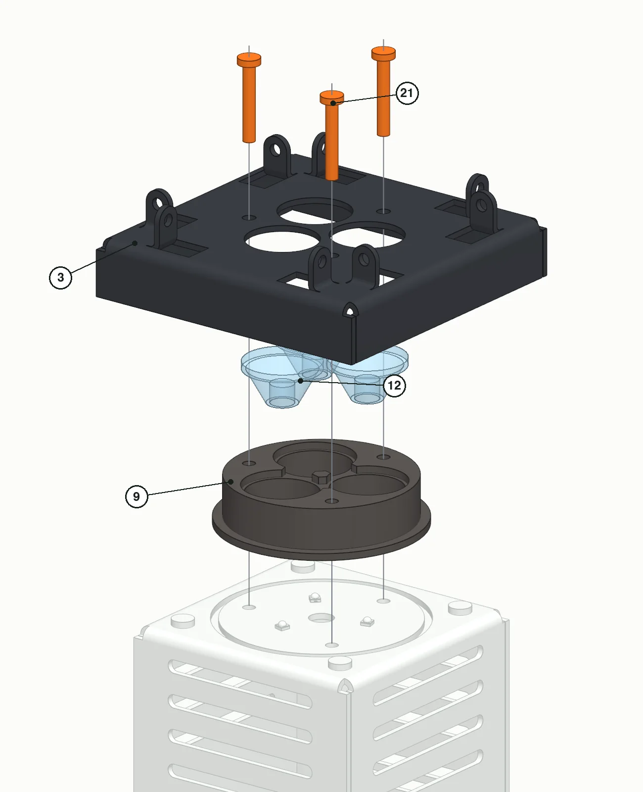
- Look into the carrier's three pockets and brush out any powder left from printing. Powder on a pocket's ledge lifts its lens by its own thickness (D38).
- Set the carrier on the LED board: its skirt goes down around the board's edge, its three small holes over the board's. Don't lever on the skirt: it hangs from a ring 0.6 mm thick.
- Drop a lens into each pocket, narrow end down, so its hollow sits over the LED and its flange rests on the ledge. Hold the lenses by the flange.
- Lower the hood over them, its three round windows over the lenses and its walls back over the shell's front.
- Three M3 × 20 through hood, carrier and LED board into the plate. Tighten them evenly, a little at a time: they clamp the LED board through the lens flanges and the carrier.
Check
- No lens rattles: the flanges stand 0.1 mm proud of the carrier, so the hood holds them.
- The hood sits square, its walls 2 mm back over the shell.
Open
- The lenses are ordered, not on hand, and their listing has no drawing. Measure them on arrival against the model: 10.8 mm tall, flange 19.9 × 2.0 mm, hollow 6.1 mm. Another seller's drawing shows 10.4, 1.9 and 6.4 mm. Whether they fit the 20.4 mm pockets is not known.
- The flange. The pockets are 1.9 mm deep. A 1.9 mm flange would sit flush with the carrier, and the hood would no longer press on the lens. Worked out from the model.
- How tight. No torque is recorded. The screws bear on PMMA flanges and a printed carrier: stop when they are snug.
LEDs plugged in, driver onto its standoffs
from the design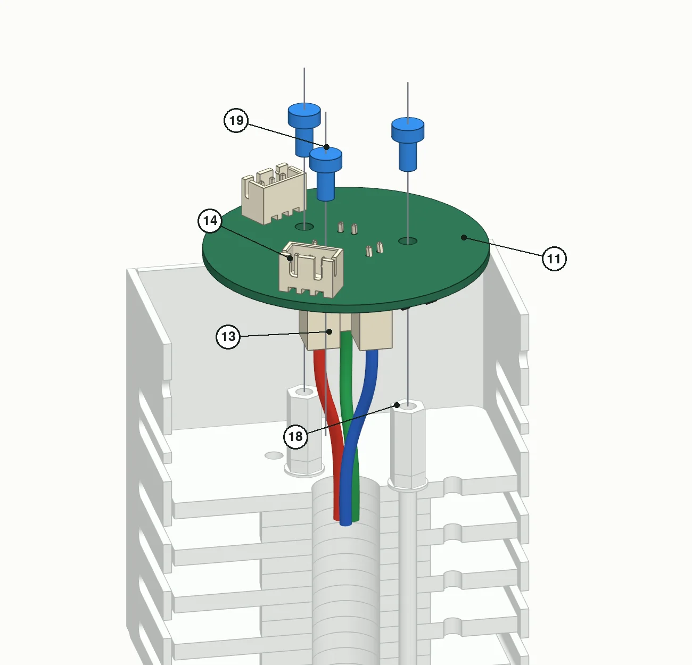
- Turn the lamp over onto the hood, back up.
- Hold the driver over the stack, parts side down, with J1 and J2 on the side away from the lone standoff. That is the lamp's top.
- Plug red into J3, green into J4, blue into J5 (the picture in step 4).
- Fold the leads' slack into the 14.9 mm between the stack and the driver, clear of the standoffs, and seat the driver on the three standoffs.
- Three polyamide M3 × 6 from the back. Snug only: the thread is polyamide.
Check
- With a meter: from the shell to GND (J1 pin 3) and to +5 V, no connection. The housing connects to nothing (D20, review R8).
- No wire is pinched under the driver. The plugs stand 9.8 mm high in the 14.9 mm.
First lamp: step 14 measures D1's temperature in the closed housing. D1 is on the driver's front, so a thermocouple has to be taped to it now and led out through a cap cut-out. The same goes for a scope lead on U7 pin 2, if this lamp will sit at the end of the longest chain cable. A proposal: the bench list does not say how to reach either.
How 8 cm leads fold into that space has not been tried.
Closing up
Doors
open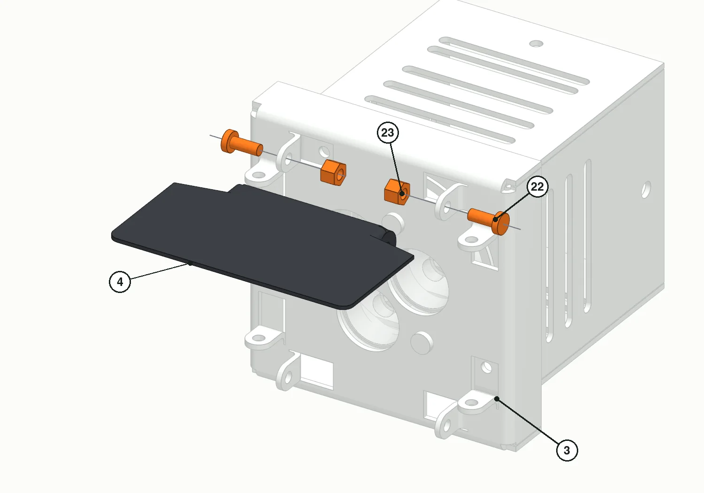
- Hold a door between a pair of the hood's lugs, its two ears just inside them.
- From outside each lug, push an M3 × 8 through lug and ear, and start a nylock on it inside the ear.
- Tighten both until the door stays where it is put and still turns by hand.
- Do the same on the other three sides. All four doors are the same part.
Check
- Each pair closes until its tips meet, at 32°, while the other pair stands at 90° or folds back (D22).
Open
- When. The housing's README fits the doors here, before the cap. They could also wait until after step 12: without them the lamp stands on its hood while the back is closed. Not tried either way.
- How tight. The nylocks set the doors' friction. No figure is recorded.
Cap
from the design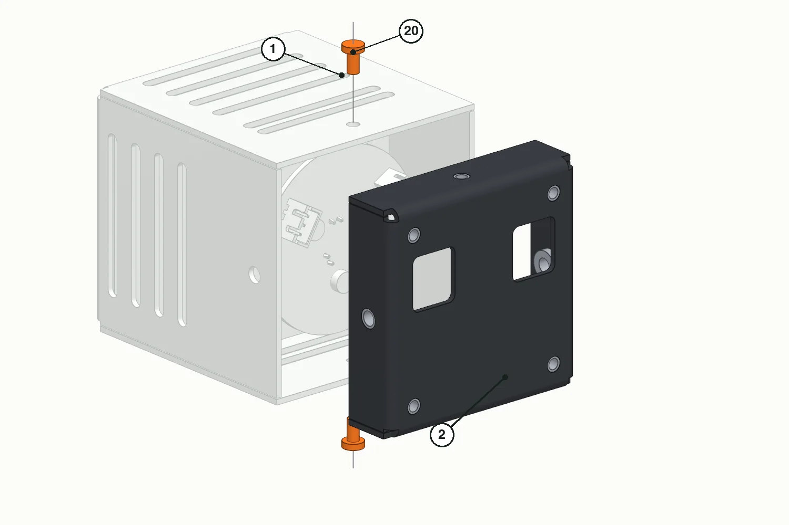
- Hold the cap with its rims forward and its two cut-outs at the top, over J1 and J2.
- Push it into the shell's back until the holes in its rims line up with the shell's. It has 0.3 mm a side.
- An M3 × 6 through the shell's top wall and one through the bottom wall, into the cap's press nuts.
Check
- J1 and J2 show in the cut-outs. An XH 3-pin plug passes a cut-out (14 × 15 mm), so the chain cables can go in with the cap on.
- The larger holes in the shell's sides line up with the cap's M4 nuts, for step 13.
Yoke and knobs
from the design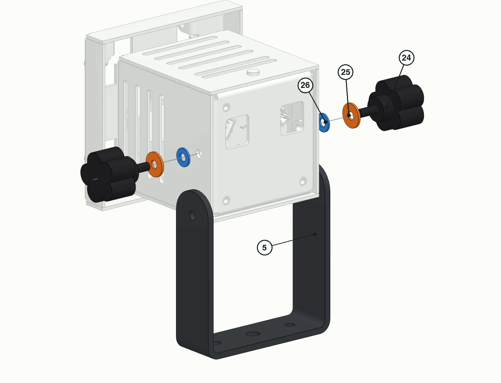
- Slide the yoke up over the shell from below until its holes meet the shell's side holes.
- Slip a polyamide washer between each arm and the shell. The gap is 1.0 mm and the washer 0.8 mm.
- Put a steel washer on each knob's stud. Pass the stud through the arm, the polyamide washer and the shell, and start it in the cap's nut.
- Tighten both knobs until the lamp stays where it is pointed.
Check
- The lamp holds wherever it is pointed. Tilting the front down, the yoke's base stops it between 50° and 55°; tilting it up, nothing stops it up to straight up (
check7.py).
The yoke's base takes one screw through the 6.6 mm hole or two M4 through the 4.5 mm holes, 44 mm apart.
First light and the closed-housing checks
open| Shell to GND and to +5 V, unpowered | open |
| 12 V, limit 0.15 A, no data | dark, < 30 mA |
| Full white | 0.42 A at 12 V |
| D1's case after 30 minutes at full white | under about 100 °C |
Above about 100 °C on D1's case, the review changes D1 to D3 to a SOD-123FL Schottky (R10).
- Unpowered: from the shell to GND and to +5 V, no connection.
- Power as in step 4, limited to 0.15 A, no data: the lamp stays dark.
- Full white, 30 minutes, with the limit at 0.6 A. Read the current and D1's case temperature, and listen for singing at mid levels (R13). On the first lamp of a chain, measure J2's temperature too.
- A chain (bench list, step 6): two lamps on a pin-1-to-pin-1 cable, then five on one feed at full white. The scope point, U7 pin 2, is on the driver's front. On the lamp at the end of the longest cable, bring a lead out from it before the driver is seated, or run that lamp with its cap off and the driver lifted off its standoffs.
- Brightness against level (step 7), for a gamma table.
- The data-pin fault (step 8), on one board, is not a closed-lamp check. It watches +5 V at U1 pin 8, D5's anode and R10's temperature, all on the driver's front. Switch the power off, take the cap off, undo the three polyamide screws and lift the driver off its standoffs before starting it. Or run it on a driver that is not built in, with its LED board as in step 4.
- Write down what happened, and change the tags in this guide to built with the date.
Open
- Reach. The bench list puts the data-pin fault after the closed-housing checks, but its probe points face the stack once the driver is seated. How far the 8 cm leads let the driver lift, and whether that is enough to probe it, has not been tried.
Other LEDs and the focus test
3.5 mm LEDs on a bare led35 board
from the design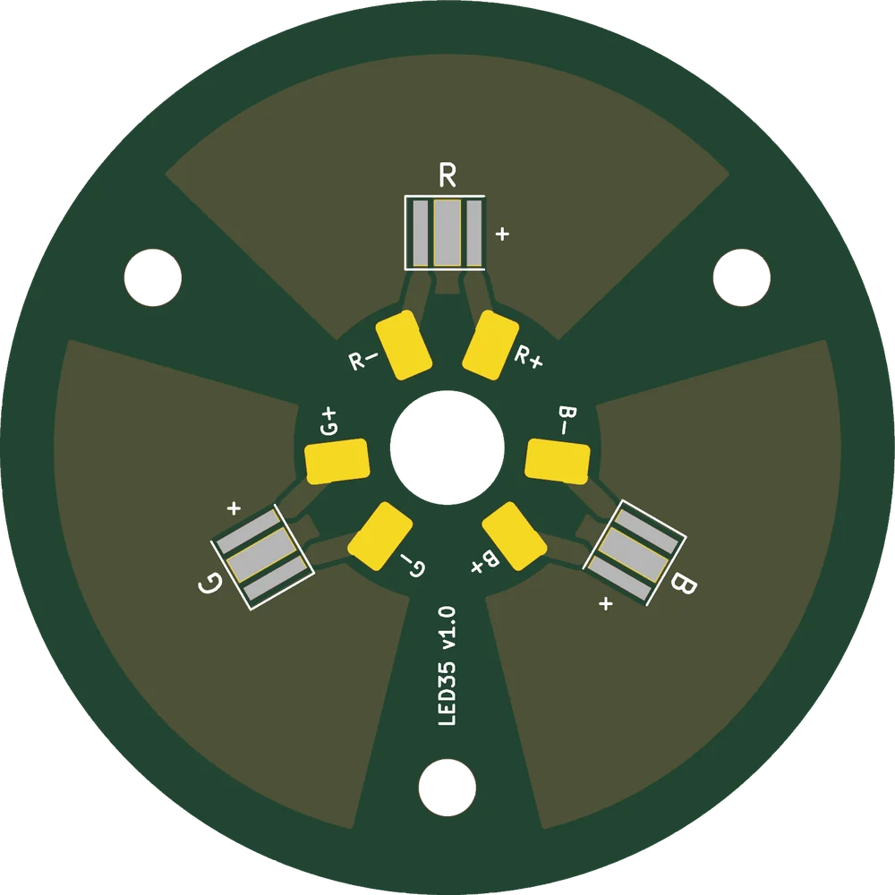
led35 board v1.0 from KiCad: the LED board with pads for 3.5 mm LEDs (D35). Ten were ordered bare. Like the LED board, the ordered ones are white.Any 3535 LED with two side pads and a centre slug fits. R, G and B on the board name the driver's channels, whatever colour is fitted. PRODUCTION.md lists the nine types bought, with their polarity marks.
- Polarity first. Pad 2, by the printed "+", is the anode. The makers mark their parts differently, so diode-test one LED of each type before soldering.
- Solder paste on the three pads of each LED, then the LEDs on.
- Heat from below, on a hot plate or with hot air. An iron cannot reach the slug pad, and the aluminium takes an iron's heat away.
- The side pads stand 0.15 mm out from the LED's body, for a probe or a touch-up.
- Carry on at step 3. The board has the LED board's outline, holes and wire pads.
Check
- The driver gives about 455 mA. Every part in PRODUCTION.md's list takes that; a part limited to 350 mA needs 0.33 Ω as its channel's Rs.
- The parts are 1.67 to 2.25 mm tall, against 2.1 mm for the LED board's own LEDs, and stay inside the lens's hollow. Whether the focus moves has not been tried: appendix B.
Focus test with the taller carriers
openThe first order has one carrier 0.5 mm taller and one 1.0 mm taller besides the five (D27). A taller carrier lifts the lenses and the hood by that much.
The lens order also has five each of four other 20 mm lenses to compare with the 30° smooth one: 15° smooth, 45° smooth, 30° with a bead face and 30° frosted. They change in the same way, without the carrier.
The LED screws still reach: their tips stand 2.6 mm out of the plate's back with the normal carrier, so 1.6 mm with the tallest. The hood's walls then reach 1.0 mm back over the shell in place of 2.0.
- Undo the three LED screws, lift off the hood and the lenses, and change the carrier. Nothing else comes apart, and the doors can stay on the hood.
- Refit the lenses and the hood as in step 9.
- Compare the three carriers with the lamp in one place, at one distance from a wall, one colour at a time.
Open
- The records name the two carriers and no test. What to compare (spot size, edge, colour fringes) and at what distance is still to be decided.
Open points
What the records do not settle, and the fits that exist only in the model. The first lamp answers most of them.
- The lenses parts, step 9
Ordered at AliExpress on 2026-11-19, not on hand: 20 of a generic 20 mm lens, 30°, smooth. The listing has no drawing. Measure on arrival: the model has 10.8 mm tall, flange 2.0, hollow 6.1; another seller's drawing shows 10.4, 1.9 and 6.4.
- The sleeve in the LED board's hole step 3
Silicone-coated fibreglass sleeve is ordered in 4 mm and 5 mm. No wall thickness is given: which one passes the 6.4 mm hole with six wires in it shows when they arrive.
- The black silicone step 8
Kafuter K-704B is ordered; its listing doesn't state the cure type. When it goes on is not recorded: this guide puts it at the end of step 8.
- The studs' depth and the thread-lock's cure step 5
0.2 mm below the plate's front face is recorded, not how to set it. No product is chosen, so no cure time.
- The doors step 11
Before or after the cap, and how tight the nylocks go.
- JLC's rails on the aluminium boards step 3
How they are joined and how clean they break. The carrier's skirt clears the board's edge by 0.3 mm.
- Probe points on the driver's front steps 10, 14
The driver's parts face the stack once it is seated. D1's temperature in the closed housing needs a thermocouple fitted before that. The chain check scopes U7 pin 2, and the data-pin fault watches U1 pin 8, D5 and R10: for those the driver has to come off its standoffs again, or a lead has to be brought out first.
- Fits never tried model only
A plug down the 12 mm bore beside two pairs (1.3 mm at its corners). 8 cm leads folded into the 14.9 mm behind the stack. The fins in the shell, 0.5 mm a side. The 0.8 mm washer in the yoke's 1.0 mm gap. The lenses in the 20.4 mm pockets. Wires and joints under the carrier's 2.5 mm.
- Photos
The pictures are drawn. A photo of each step from the first build would show what the model cannot: paste, wires, the real parts' finish.
Chaining lamps
Chain cables are JST XH 3-pin, wired pin 1 to pin 1: 1 = 12 V, 2 = data, 3 = GND. Up to five lamps on a fused 12 V feed (D14, D15). Between groups the cable leaves pin 1 open, so two feeds never run in parallel. Test each cable with a meter before it meets a lamp: 12 V on the data pin is the fault the driver's R10 and D5 are there for.
mech/housing/README.md: the parts, the fasteners and the assembly order.mech/housing/sheet.pyandround2.pytoround8.py: every size and clearance quoted here.- DESIGN.md decisions D19 to D38. PRODUCTION.md, "After the boards arrive" and the parts table.
production/orders/2026-11-16-v2-first/order.toml. docs/reviews/2026-10-30-v2.md: the bench list and R8 to R13.- The lenses, the sleeve and the silicone: the extras in the order file above, as recorded on 2026-11-19.
- Pad and pin places on the board pictures: read from
boards/driver/driver.kicad_pcbandboards/led/led.kicad_pcb.
img/ come from one script. It draws the housing from round 8's model and cuts the boards' views from docs/previews/. After a change to the model or a board:cd mech/housing ROT=45 uv run --python 3.12 --with cadquery --with pillow python assembly_views.py ../../docs/assembly/img
mech/out/ (the commands are in mech/housing/README.md). The part numbers are the script's PART table and this page's parts table: change both together. The drawings in steps 2, 5 and 8 and the labels on the board pictures are in this file.